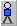
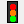
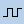
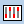
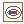

Die Bauteilleiste befindet sich oben auf dem Panel. Dort wählen Sie ein Bauteil und setzen es anschließend mit einem Klick auf das Panel. Ist das Fenster zu schmal für alle Knöpfe, kommen die übrigen Knöpfe in eine zweite Reihe.
Die Bauteile sind in drei Gruppen eingeteilt, von links nach rechts in einer Schaltung: Eingang → Verarbeitung → Ausgang.
| Schaltfläche | Name | Was macht sie? |
|---|---|---|
| Verbindung | Schaltet den Drahtmodus ein oder aus. Siehe Verbindungen. |
Die Eingänge stehen in der Gruppe Versorgung: Schalter oder Taster, Wechselschalter, LDR, NTC, Impulsgenerator und DIP-Schalter, mit Klemmen zwischen der + Schiene und dem Eingang. Die alten Eingänge ohne Klemmen (siehe Eingänge) stehen nicht mehr in der Leiste.
| Schaltfläche | Name | Was ist das? |
|---|---|---|
 | UND-Gatter | Ausgang ein, wenn alle Eingänge ein sind. |
 | ODER-Gatter | Ausgang ein, wenn mindestens ein Eingang ein ist. |
 | NICHT-Gatter | Kehrt das Signal um. |
 | NAND-Gatter | Ausgang aus, wenn beide Eingänge an sind. |
 | NOR-Gatter | Ausgang an, wenn beide Eingänge aus sind. |
 | XOR-Gatter | Ausgang an, wenn genau ein Eingang an ist. |
 | Zählerbaustein | Zählt Impulse und gibt den Stand binär weiter. |
 | Flipflop | Speichert ein Bit (SR, D, JK oder T). |
 | Schrittzähler | Zählt Impulse bis 9999 und zeigt den Stand auf einer Anzeige. |
 | Stoppuhr | Misst die Zeit (MM:SS), solange S ein ist; Q geht bei der Endzeit an. |
 | Speicherbaustein | Gibt den Inhalt eines gewählten Speicherplatzes weiter. |
| Schaltfläche | Name | Was ist das? |
|---|---|---|
 | Lampe | Leuchtet, wenn der Eingang ein ist. |
| Relais | Zeigt, wie ein Kontakt umschaltet, wenn die Spule erregt wird. | |
 | Summer | Ertönt, wenn der Eingang ein ist. |
 | Motor | Dreht links (Eingang L) oder rechts (Eingang R). |
| 7-Segment-Anzeige | Zeigt eine Ziffer oder einen Buchstaben. | |
 | Voltmeter | Zeigt die Spannung, zum Beispiel 3,3 V. |
 | Milliamperemeter | Zeigt den Strom in mA; nur sichtbar, wenn die Schaltflächen der Versorgung eingeschaltet sind. |
 | Wattmeter | Zeigt die Leistung in W von allem, was dahinter hängt; nur sichtbar, wenn die Schaltflächen der Versorgung eingeschaltet sind. |
 | Oszilloskop | Zeichnet die Spannung zwischen + und − über die Zeit. |
 | Person | Geht nach links (Eingang L) oder rechts (Eingang R); die Endschalter S1 und S2 melden, wo sie steht. |
 | Wagen | Fährt vorwärts (Eingang V) oder rückwärts (Eingang A) über eine kurvige Straße; Start, Finish und Tel (ein Impuls an jedem Pfosten) melden, wo er ist. |
 | Spieldose | Tastatur mit 8 Klaviertasten (C bis C'), ein Eingang pro Taste: ein lässt die Taste leuchten und die Note klingen. |
 | Ampel | Ampel für Autos (rot, gelb, grün) mit Fußgängerampel; fünf Eingänge, wie UIT0 bis UIT4 von LogicRun. |
 | Schranke | Schranke eines Parkplatzes; Eingang O öffnet die Schranke, Endschalter Zu und Auf. |
| Schaltfläche | Name | Was ist das? |
|---|---|---|
 | + Schiene | Versorgungsschiene für die Eingänge; die Spannung kommt von der Quelle. |
 | − Schiene | Masseschiene (0 V) für die Ausgänge. |
 | Quelle (Akku) | Spannungsquelle von 0 bis 12 V mit Schieberegler. |
 | Wechselspannungsquelle | Wechselspannung bis 12 V Spitze, verlangsamt auf 0,5, 1 oder 2 Hz. |
 | Sicherung | Brennt durch, wenn zu viel Strom fließt. |
 | Widerstand (Kontakt) | Kontakt oder Draht mit einem kleinen Widerstand: Spannungsabfall U = I × R. |
 | Potentiometer | Widerstand mit einem Schleifer und drei Klemmen (A, B und L); ziehen Sie den Schleifer mit der Maus. |
 | LDR | Fotowiderstand; das Licht mit dem Schieberegler einstellen. |
 | NTC | Heißleiter; die Temperatur mit dem Schieberegler einstellen. |
 | Diode | Lässt Strom nur in eine Richtung durch (von A nach K), über 0,7 V. |
 | Wechselschalter | Drei Klemmen: Die Mitte ist mit A oder B verbunden. Zwei davon schalten eine Lampe von zwei Stellen (Treppenhaus). |
 | Impulsgenerator | Schalter, der sich von selbst öffnet und schließt: Impulse von 0,5 bis 5 Hz. |
 | DIP-Schalter | Vier kleine Schalter: eine Zahl von 0 bis 15 an den Ausgängen 8, 4, 2 und 1. |
| Transistor | NPN oder PNP mit drei Klemmen (C, B und E): Ic = β × Ib. | |
 | Stabmagnet | Magnet mit einem Nordpol (rot) und einem Südpol (blau), ohne Klemmen. |
 | Kompass | Eine Nadel, die entlang des Magnetfelds zeigt. |
 | Feldlinienplatte | Zeigt die Feldlinien der Magnete, die darauf liegen, wie Eisenfeilspäne. |
 | Spule | Spule mit Windungen im Stromkreis: Mit Strom wird sie ein Magnet. |
 | Nagel | Ein Stück Eisen: Ein Magnet oder eine Spule mit Strom zieht es an. |